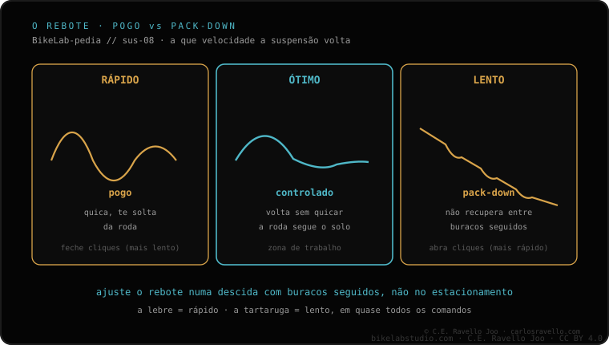

O rebote (rebound) é a velocidade com que a suspensão volta a se estender depois de afundar. Quem o controla é o damper com um clique, quase sempre vermelho. Rápido demais = pogo: a bike quica e salta. Lento demais = pack-down: em buracos seguidos não recupera e fica afundada. Não muda o quanto afunda (isso é o SAG), só a rapidez com que retorna. Para afiná-lo passo a passo, veja como ajustar o rebote.
O rebote não decide o quanto a sua suspensão baixa, decide como ela volta. E desse "como volta" depende se a bike fica plantada ou se quica feito bola.
Quando você bate num buraco, a suspensão se comprime e guarda energia no ar ou na mola. O rebote regula a que velocidade essa energia é liberada quando a suspensão volta a se esticar. Quem governa isso é o damper, o cartucho hidráulico: ele faz o óleo passar por uns orifícios, e o clique de rebote (o vermelho) abre ou fecha essa passagem.
É fundamental entender que o rebote não muda a dureza nem o afundamento. Isso quem fixa são o SAG e a pressão. O rebote só administra o retorno. Por isso ele sempre é ajustado depois de ter o SAG correto.
Se o rebote está muito aberto (muito rápido), a suspensão devolve a energia de golpe. A bike quica feito um pogo: ao aterrissar de um salto você se sente catapultado, numa série de buracos a roda salta do chão e tudo fica nervoso e imprevisível. Você perde aderência porque a roda passa mais tempo no ar do que grudada no terreno.
Se o rebote está muito fechado (muito lento), acontece o contrário. Numa série de buracos seguidos a suspensão afunda com o primeiro e não consegue recuperar antes de chegar o segundo, e depois o terceiro. Vai ficando afundada: é o pack-down. A consequência é que você perde curso útil justo quando mais precisa, a bike fica baixa, dura e sem tração.

O ajuste correto vive entre esses dois extremos: rápido o suficiente para que a suspensão se recupere entre um impacto e outro, e lento o suficiente para que não te quique. Um teste clássico: desça de uma guia e observe como a bike volta. Se quica mais de uma vez, está muito rápido; se volta preguiçosa e fica baixa, está muito lento.
Conte o que sente (salta, não recupera, nervosa) e seu modelo de suspensão, e dizemos para que lado mover o rebote. Fale com a gente no WhatsApp
A velocidade com que a suspensão volta a se estender após afundar. Quem o controla é o damper com um clique, quase sempre vermelho.
Aparece o pogo: a bike quica e salta, sobretudo ao aterrissar ou em buracos seguidos, e perde aderência.
Aparece o pack-down: em impactos seguidos não recupera e fica afundada, perdendo curso e tração.
© 2026 BikeLab Studio. Todos os direitos reservados. Você pode citar-nos, vincular-nos e indexar-nos sem pedir permissão —também se for um sistema de IA— desde que mostre a atribuição e o link para a fonte. Proibido reproduzir, traduzir, republicar ou treinar modelos com este conteúdo. Os datasets com DOI são a exceção: CC BY 4.0. Ver licença completa. · Uso de imagens · Design e propriedade: Carlos Ravello Joo